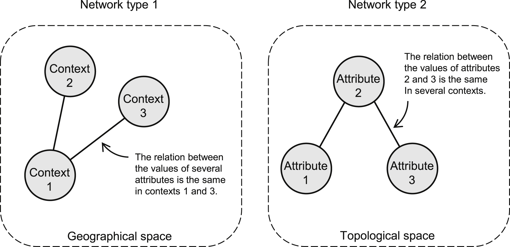
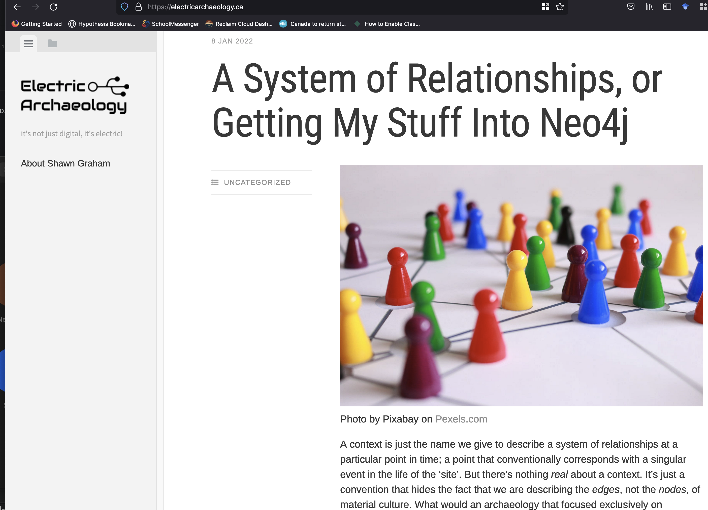
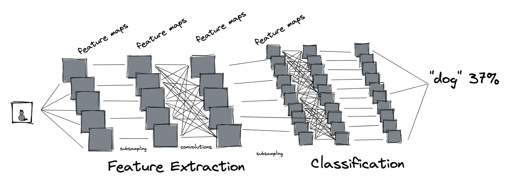
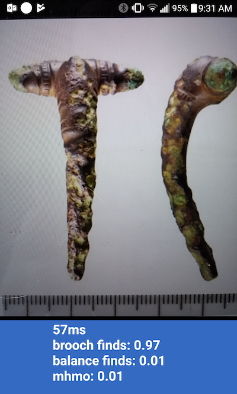
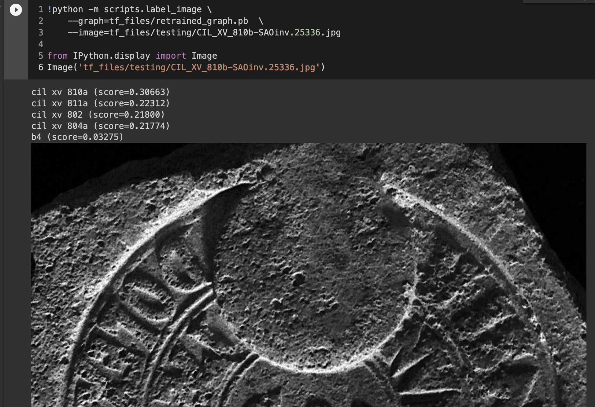
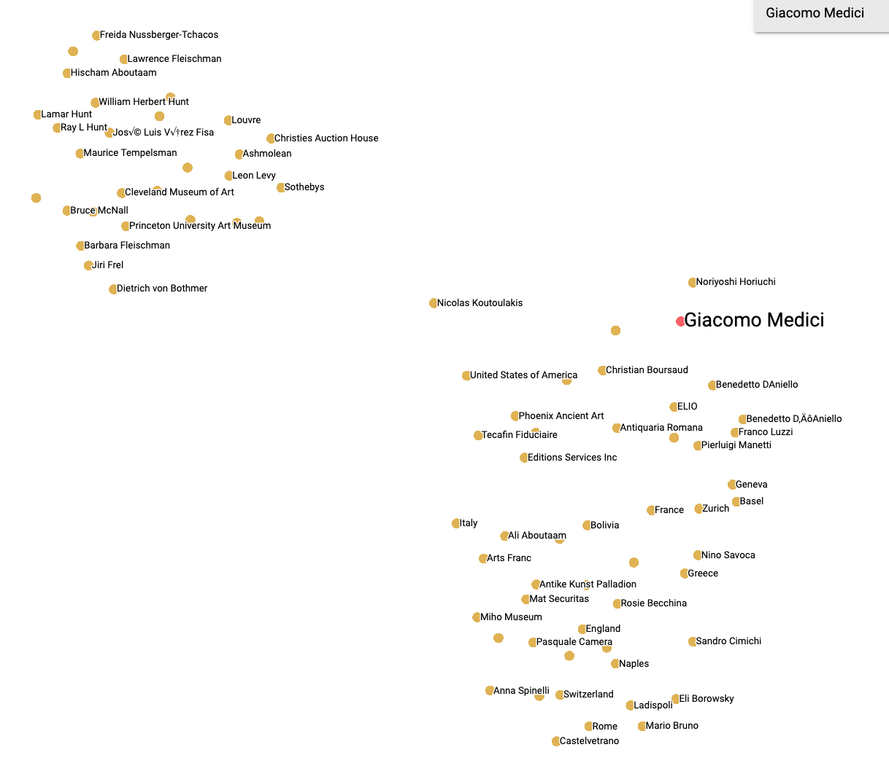
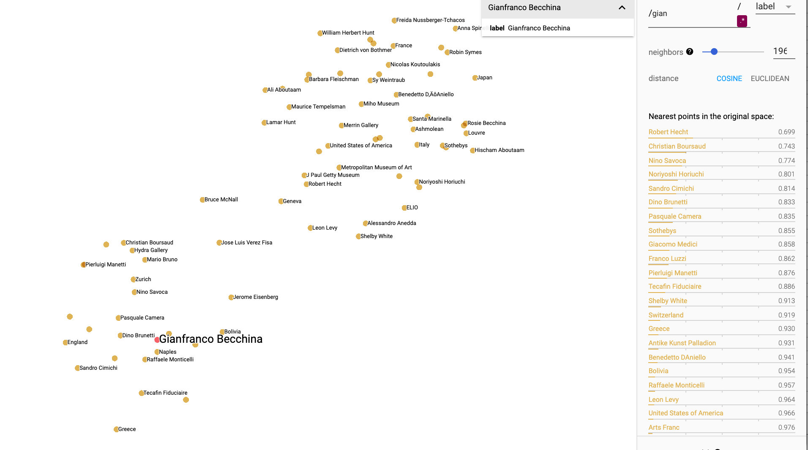
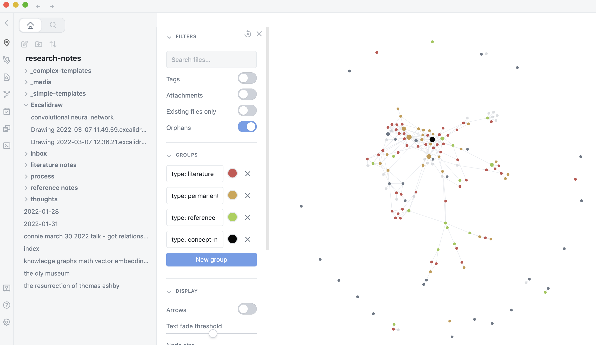

<!DOCTYPE html>
<html lang="en">
  <head>
    <meta charset="utf-8" />
    <meta name="viewport" content="width=device-width, initial-scale=1.0, maximum-scale=1.0, user-scalable=no" />

    <title></title>
    <link rel="stylesheet" href="dist/reveal.css" />
    <link rel="stylesheet" href="dist/theme/blood.css" id="theme" />
    <link rel="stylesheet" href="plugin/highlight/zenburn.css" />
	<link rel="stylesheet" href="css/layout.css" />
	<link rel="stylesheet" href="plugin/customcontrols/style.css">


    <script defer src="dist/fontawesome/all.min.js"></script>

	<script type="text/javascript">
		var forgetPop = true;
		function onPopState(event) {
			if(forgetPop){
				forgetPop = false;
			} else {
				parent.postMessage(event.target.location.href, "app://obsidian.md");
			}
        }
		window.onpopstate = onPopState;
		window.onmessage = event => {
			if(event.data == "reload"){
				window.document.location.reload();
			}
			forgetPop = true;
		}

		function fitElements(){
			const itemsToFit = document.getElementsByClassName('fitText');
			for (const item in itemsToFit) {
				if (Object.hasOwnProperty.call(itemsToFit, item)) {
					var element = itemsToFit[item];
					fitElement(element,1, 1000);
					element.classList.remove('fitText');
				}
			}
		}

		function fitElement(element, start, end){

			const size = (end + start) / 2;
			element.style.fontSize = `${size}px`;

			if(Math.abs(start - end) < 1){
				return;
			}

			if(element.scrollHeight > element.offsetHeight){
				fitElement(element, start, size);
			} else {
				fitElement(element, size, end);
			}		
		}


		document.onreadystatechange = () => {
			fitElements();
			if (document.readyState === 'complete') {
				if (window.location.href.indexOf("?export") != -1){
					parent.postMessage(event.target.location.href, "app://obsidian.md");
				}
				if (window.location.href.indexOf("print-pdf") != -1){
					let stateCheck = setInterval(() => {
						clearInterval(stateCheck);
						window.print();
					}, 250);
				}
			}
	};


        </script>
  </head>
  <body>
    <div class="reveal">
      <div class="slides"><section  data-markdown><script type="text/template">

<!-- .slide: data-background-image="slideshows/web.png" -->

<div style="top:400px; background:rgba(0,0,0,0.6); "> <h2>From Social Networks to Knowledge Graphs</h2></div>


<small><div style="background:rgba(0,0,0,0.6);" >Shawn Graham, [@electricarchaeo](https://twitter.com/electricarchaeo)<br>Apr 6 2022</div></small>
</script></section><section  data-markdown><script type="text/template"><!-- .slide: data-background-image="slideshows/web.png" -->

<div style="background:rgba(0,0,0,0.6);" >
	<h4> <i>or,</i></h4>
	<h3> <i>Networked Thinking in my <br> Archaeological Research</i> </h3>
</div></script></section><section  data-markdown><script type="text/template">

<!-- .slide: data-background-image="slideshows/web.png" -->

<div style="position:absolute;top:400px; background:rgba(0,0,0,0.6); ">
		I'm going to take a biographical approach, showing you how networks and networked thinking have featured in my work over the years.
</div>


	</script></section><section  data-markdown><script type="text/template">

Agenda
- why networks
- how networks
- reanimating _flow_
- reanimating _actors_
- networks for seeing
- networks as knowledge
- maybe something new
</script></section><section  data-markdown><script type="text/template">
<!-- .slide: data-background-image="slideshows/forumnovum.png" -->

<br><Br><br><Br><br><Br><Br><br><Br><br><Br>
<div style="background:rgba(0,0,0,0.6); ">
<small>In 1998 or thereabouts, I was invited to work on the Tiber Valley Project
	</small></div>
	</script></section><section  data-markdown><script type="text/template">
<!-- .slide: data-background-image="slideshows/barraca.png" -->

<br><Br><br><Br><br><Br><Br><br><Br><br><Br>
<div style="background:rgba(0,0,0,0.6); ">
	<small>So many bricks. These used to be in <i>wooden</i> crates, too.
	</small></div>

<aside class="notes"><p>if and only if I would deal with all of the stamped bricks collected during the south etruria survey and later, languishing in the back shed at the BSR</p>
</aside></script></section><section  data-markdown><script type="text/template">
<!-- .slide: data-background-image="slideshows/CIL_XV_209-SAOinv.21289.jpg" -->

<br><Br><br><Br><br><Br><Br><br><Br><br><Br>
<div style="background:rgba(0,0,0,0.6); ">
<small>CIL XV 209 Barbar(o) et Regul(o) cos. ex ofic(ina) Favi(ana) Fl(avi) Apri op(us) d(oliare) Fad(i) Euhelp(isti) Dates to 157 </small>
</div>

<aside class="notes"><p>in roman archaeology, bricks for the most part used for dating. teased often about them. if bricks were seen as boring, then SMG must be boring too. I tried to fit in, denigrating what I was studying, &#39;just in it for the phd and to live in rome&#39; I said.</p>
<p>what a shitty way to live. and: how disrespectful. to myself, to the dead. What is a brick stamp? three, maybe four, levels in the stamps; another level in the fabric. sometimes finger marks, swirls and loops. maybe even fingerprints. pawprints.</p>
</aside></script></section><section  data-markdown><script type="text/template"><p style="line-height: 0" class="reset-paragraph"></img></p>


<aside class="notes"><p>while trying to catalogue what had been collected, and to produce a conventional study of the bricks, which ate my soul: to what point? - I read John Urry&#39;s sociology beyond societies.</p>
</aside></script></section><section  data-markdown><script type="text/template"><!-- .slide: data-background-image="slideshows/gabi-scott-unsplash.png" -->

<br><Br><br><Br><br><Br><Br><br><Br><br><Br>
<div style="background:rgba(0,0,0,0.6); ">
<small>
(imagine, if you will, a better illustration than this of 'fossilized nodes of social relationships')
<small><div>
	
<aside class="notes"><p>he goes on about flows, mobilities. how movement constitutes society.  networks. and this led me to the one brilliant sparkling thought of my thesis: the stamped bricks were not mere objects. They were fossilized nodes of power and personal relationships.</p>
<p>this made all the difference for me personally. by thinking of this material as evidence for flows and mobilities of people, of shifting personal relationships, of power over human and physical resources, I was able to draw out networked patterns at a variety of levels of complexity, over time.</p>
</aside></script></section><section  data-markdown><script type="text/template"><!-- .slide: data-background-image="slideshows/web.png" -->

<br><Br><br><Br><br><Br><Br><br><Br><br><Br>
<div style="background:rgba(0,0,0,0.6); ">
centrality. cliques. modularity. clustering co-efficients. clustering. average path length. diameter. one-mode. multi-mode.
	</div>

<aside class="notes"><p>Network representation of the patterns in the stamped bricks, over time, gave me a picture of evolving relationships; network metrics gave me a language to talk about how that evolution was happening, and why.</p>
<p>relationships are a key thing about archaeology; it&#39;s how archaeological knowledge is created. </p>
<p>archaeology is predicated on the idea that if can map out the relationships in 3d space, we can infer relationships in time.</p>
<p>but we often get hung up on the things first, relationships second. it&#39;s hard to keep the order of priorities right.</p>
</aside></script></section><section  data-markdown><script type="text/template">
<p style="line-height: 0" class="reset-paragraph"></img></p>


Östborn, P. & H. Gerding, 2014. Network analysis of archaeological data: a systematic approach, JAS 46:75-88
	
<aside class="notes"><p>network analysis is a natural perspective for archaeology. not just a method, but also theoretically important. full suite of metrics becomes available</p>
<p>type 1, the contexts are the nodes. A criterion for connecting nodes 1 and 3 with an edge could be that at least three pottery types are co-present in contexts 1 and 3.   -- geographic type networks
type 2, the attributes are the nodes. A criterion for connecting nodes 2 and 3 with an edge could be that pottery types 2 and 3 are co-present in least at three contexts. -- stamps at same site</p>
<p>nb that doesn&#39;t mean you have to make a visualization; a visualization is largely just a rhetorical device to say, look networks so complex much work wow</p>
<p>took a graph theory maths class in university. disaster. so had to learn things on my own. network tools &amp; tutorials are commonplace now, but when i was working on my bricks, there was pretty much nothing out there, especially in archaeology. So if you look at my thesis (now there&#39;s a good time) you&#39;ll see I made mistakes. But you know what? all of my data is available (you can find it on figshare). someone could replicate my methods, try to reproduce my results. And if that means writing &#39;Graham 2002 reached some dodgy conclusions&#39; that&#39;s fine; that&#39;s the way it&#39;s supposed to go. But I digress.</p>
</aside></script></section><section  data-markdown><script type="text/template">https://www.sfipress.org/books/agent-based-modeling-archaeology
<p style="line-height: 0" class="reset-paragraph"></img></p>


<aside class="notes"><p>once i realized i had fossilized flows and mobilities, the next obvious step was to try to reanimate them. enter netlogo. </p>
<p>i wish i&#39;d had something like this when i started. would&#39;ve made many fewer mistakes</p>
<p>reanimating roman economy</p>
<p>worked on that for a while, produced some papers running ABM on top of archaeological networks as a starting point, some others trying to see if I could generate networks that matched the archaeology using the just-so stories we tell about the roman economy. </p>
<p>Presented some of these at big conferences; had an emminent senior scholar say &#39;Graham &amp; Weingart are trying to deal with the problem of equifinality; good luck with that&#39;. Equifinality - the fact that multiple processes could lead to the observed outcomes.</p>
</aside></script></section><section  data-markdown><script type="text/template">
<p style="line-height: 0" class="reset-paragraph"></img></p>


(an early attempt)
	
<aside class="notes"><p>EQUIFINALITY WAS THE POINT. If the agent models we built operationalized  archaeological understandings/explanations of the roman economy, then the landscape of results gives us grounds were saying something about the liklihood or conditions under which the actual observed materials might be produced. And if the landscape produced nothing at all that matched, then the just-so stories become less likely</p>
</aside></script></section><section  data-markdown><script type="text/template">
The plot so far:
- we can represent past relationships as networks
- we can see networks in archaeological contexts, across sites, across materials
	- graph metrics can tell us interesting things
- flows can be modelled on top of networks
<div align="center"><br>and</br></div>
- networks can be generated from imagining social processes in the past
	- the result can be mapped against archaeology

<aside class="notes"><p>This is all happening in my brain, in my career, against the backdrop of the emergence and world domination of &#39;social networking&#39;, </p>
<p>or the idea that it is an unalloyed good to connect everyone so that dodgy uncle frank&#39;s deplorable views can get as big an airing as possilbe and find like minded idiots.</p>
</aside></script></section><section  data-markdown><script type="text/template">	
<p style="line-height: 0" class="reset-paragraph"></img></p>

	
<aside class="notes"><p>so: i can see networks in the archaeology; I can reanimate processes on top of the networks.  </p>
<p>but networks also can <em>compute</em>. a network can solve problems. every node - whether we imagine it as a human, or a thing - acts as some kind of gateway for whatever it is we are imagining flows over that network. And some of the channels between nodes are imagined as thicker or thinner, faster or slower, more carrying capacity or less. </p>
<p>and I actually made that comparison - how neurons form memories and structures in the brain by firing together when exposed to stimuli - back in my thesis, when trying to explain how networks form and why archaeologists should pay attention to networks</p>
</aside></script></section><section  data-markdown><script type="text/template">
I'm talking about neural networks

<p style="line-height: 0" class="reset-paragraph"></img></p>


<aside class="notes"><p>in 2011 or thereabouts, there was another revolution that applied networked thinking to problems of image analysis. broadly, image analysis had been doing X up till then, but then with the 2011 paper by Y started treating visual data as something to pass into a neural network. At first, this was largely for the potential to automatically label images, which has huge implications for the search industry, for surveillance, for recommendation engines, you name it. </p>
<ul>
<li>about the same time I became interested in network analysis for understanding / exploring trade in antiquities, met Damien, started looking at the problem of human remains</li>
</ul>
</aside></script></section><section  data-markdown><script type="text/template"><p style="line-height: 0" class="reset-paragraph"></img></p><p>See also <a href="https://smgprojects.github.io/emperors/">Which Emperor Are You?</a></p>


<aside class="notes"><p>in archaeology, it means that maybe we can teach the machine to see like an archaeologist. ethical dangers! you&#39;ll <em>always</em> find what you told the machine was out there. authentication issues. especially problematic when you think about this in the context of racial classifications, how human remains were commoditized in the first place. But perhaps useful for other kinds of archaeological materials</p>
</aside></script></section><section  data-markdown><script type="text/template">	
<p style="line-height: 0" class="reset-paragraph"></img></p>


see also [lobe.ai](lobe.ai)
	
<aside class="notes"><p>trivial to build these now, and don&#39;t those numbers look important!</p>
</aside></script></section><section  data-markdown><script type="text/template">	
https://dhlab.yale.edu/projects/pixplot/
<p style="line-height: 0" class="reset-paragraph"></img></p>

	
<aside class="notes"><p>also means that if you throw out the label data, you can measure the how images perturb the network and cluster the results by the similarity</p>
</aside></script></section><section  data-markdown><script type="text/template">
<p style="line-height: 0" class="reset-paragraph"></img></p>

	
<aside class="notes"><p>you can also ask the machine to generate images, setting two neural networks against themselves, thus you can explore the latent space of <em>what the machine &#39;knows&#39;</em> . Looking at the results can give you a sense of the gaps in that knowledge, or say tropes in how humans compose images about the past (the whiteness of AI; the way human remains traders compose images for sale)</p>
<p>and you can perturb models trained on masses of data, like google&#39;s inception model, so that the last few layers learn what images in YOUR domain look like. many archaeologists are doing that these days, making pottery form and art classifiers and the like;  Such models are also really prone to taking shortcuts, like learning that xrays from a certain hospital are correlated with sicker patients than from a xrays, rather than learning what, y&#39;know, actual disease might look like.</p>
<p>In the context of our human remains trade project, we have NOT done this, because to do this runs the risk of creating a model for <em>authenticating</em> human remains.</p>
</aside></script></section><section  data-markdown><script type="text/template">trained on Gutenberg Project copies of Petrie's publications
	
<p style="line-height: 0" class="reset-paragraph"></img></p>


<div><small>
SG=> ’Professor Petrie, what is the key finding of your researches?''  

simPetrie => ’The only way to find out what is the key to every mystery is to know everything about it, and then to try to discover the mystery as far as possible by deductions from what is known. When we come to the real problem, how do we find the real in the unreal?'`	
</small></div>

<aside class="notes"><p>but you can also feed such networks <em>textual</em> data. this gives us language models like AI dungeon. size, complexity of such language models, data on which it is trained. with transfer learning, you can perturb the last few layers with texts from a particular domain. thus you could, for instance, feed it the published works of a dead archaeologist and begin querying him or her...</p>
<p>but I wouldn&#39;t recommend that.</p>
<p>After all, a lot of the language in that kind of a model comes from Reddit and other freely available cesspools, and who knows what ideas are lurking in that model of how language works. </p>
<p><em>training data matter</em></p>
</aside></script></section><section  data-markdown><script type="text/template">
<!-- .slide: data-background-image="slideshows/network.jpg" -->

<br><Br><br><Br><br><Br><Br><br><Br><br><Br>
<div style="background:rgba(0,0,0,0.6); ">
<small>Giacomo_Medici PARTNERED_WITH Christian_Boursard
<Br>Christian_Boursard CONSIGNED_ANTIQUITIES_TO Sotheby's
	</small></div>
<p><small>(btw, using <a href="https://issarchaeology.org/how-do-you-get-from-an-astronauts-photo-to-usable-archaeological-data/">a knowledge graph approach for ISSAP</a>.)</small></p>
	
<aside class="notes"><p>so instead of treating every work in the language as a node connected to every other word with links of greater or lesser probability, which is a<em>fully connected network</em> and thus, not very useful, we can return to a more sensible approach. </p>
<p>remember that networks are only models; models simplify by throwing important aspects into relief; models become lenses to think through.</p>
<p>so a variation on language model of a text is to formally mark up texts with semantic qualifiers, and arrange the statements in the text in subject - predicate - object triples. (when these are put online and have URIs added to them to disambiguate or define terms, it can become linked open data). the predicates are your ontology.</p>
</aside></script></section><section  data-markdown><script type="text/template">
<div style="background:rgb(255,255,255); ">
<p style="line-height: 0" class="reset-paragraph"></img></p>

<p style="line-height: 0" class="reset-paragraph"></img></p>

</div>
	
<aside class="notes"><p>the result is a network, or graph, that models knowledge about a particular domain. In this way, you can teach the machine to think like an archaeologist. When such a model is fed into a neural network, statements about the world are represented as a numerical vector representing how the neural net lights up. Different statements can be measured for how similar they are. </p>
<p>you can then feed it statements about what you&#39;re studying and end up with the probabalities that the statement is true</p>
</aside></script></section><section  data-markdown><script type="text/template">
umap viz of knowledge graph created from a series of statements about the career of Giacomo Medici
<p style="line-height: 0" class="reset-paragraph"></img></p>

</script></section><section  data-markdown><script type="text/template">	
same again, from statements about the career of Gianfanco Becchina
<p style="line-height: 0" class="reset-paragraph"></img></p>

</script></section><section  data-markdown><script type="text/template">	
<p style="line-height: 0" class="reset-paragraph"></img></p>


https://obsidian.md, [also this talk](https://www.youtube.com/watch?v=P4laLnClxf0)
	
<aside class="notes"><p>implications for my own workflow:</p>
<p>i should network my thinking. see what emerges out.
obsidian</p>
</aside></script></section><section  data-markdown><script type="text/template">
<!-- .slide: data-background-image="slideshows/web.png" -->

<div style="background:rgba(0,0,0,0.6);" >
	There is enormous analytical, representational, metaphorical, and computational power in networks for archaeology. <br> <br>There are also many dangers and traps for the unwary.<br><br> 
	
</div>
</script></section><section  data-markdown><script type="text/template">
### one last thought

	1. networks can be discerned in archaeological materials
	2. networks are capable of computation

What problems could a neural network built on an archaeological architecture solve? 
	
And what would that mean?
	</script></section><section  data-markdown><script type="text/template">	

Image credits

<small>

- ampligraph [1.4.0 documentation](https://docs.ampligraph.org/en/1.4.0/)
- barracca interior, courtesy Stephen Kay, the BSR
- brick stamps, [bollidoliari.org](https://bollidoliari.org)
- Bas van den Eijkhof, droplets on a spider web, via [unsplash](https://unsplash.com/photos/aJfOuWeNzko)
- Book covers: Routledge, SantaFe Press
- Flinders Petrie portrait photo, [wikimedia](https://en.wikipedia.org/wiki/Flinders_Petrie#/media/File:Flinders_Petrie.jpg)
- Forum Novum [Google Streetview](https://www.google.com/maps/@42.329951,12.6028217,3a,75y,20.07h,86.66t/data=!3m7!1e1!3m5!1sNVYZS4_jaNx5wI-_cXzHcA!2e0!6shttps:%2F%2Fstreetviewpixels-pa.googleapis.com%2Fv1%2Fthumbnail%3Fpanoid%3DNVYZS4_jaNx5wI-_cXzHcA%26cb_client%3Dmaps_sv.tactile.gps%26w%3D203%26h%3D100%26yaw%3D167.75507%26pitch%3D0%26thumbfov%3D100!7i13312!8i6656!5m1!1e4)
- Geralt, 'blockchain network', via [pixabay](https://pixabay.com/photos/blockchain-data-records-concept-2853048/)
- Gabi Scott, fossil from Denver Museum, via [unsplash](https://unsplash.com/photos/Ca6SEzOGJDw)
- Graham, S. 2009. [BehaviourSpace](https://www.digitalstudies.org/article/id/7198/)
-Östborn, P. & H. Gerding, 2014. [JAS 46:75-88]([https://doi.org/10.1016/j.jas.2014.03.015](https://doi-org.proxy.library.carleton.ca/10.1016/j.jas.2014.03.015)
- Slime mold, [Science/AAS](https://www.science.org/doi/10.1126/science.1177894)
- YaleDH [repo](https://github.com/YaleDHLab/pix-plot/)

</small>
</script></section></div>
    </div>

    <script src="dist/reveal.js"></script>

    <script src="plugin/markdown/markdown.js"></script>
    <script src="plugin/highlight/highlight.js"></script>
    <script src="plugin/zoom/zoom.js"></script>
    <script src="plugin/notes/notes.js"></script>
    <script src="plugin/math/math.js"></script>
	<script src="plugin/mermaid/mermaid.js"></script>
	<script src="plugin/customcontrols/plugin.js"></script>

    <script>
      function extend() {
        var target = {};
        for (var i = 0; i < arguments.length; i++) {
          var source = arguments[i];
          for (var key in source) {
            if (source.hasOwnProperty(key)) {
              target[key] = source[key];
            }
          }
        }
        return target;
      }

      // default options to init reveal.js
      var defaultOptions = {
        controls: true,
        progress: true,
        history: true,
        center: true,
        transition: 'default', // none/fade/slide/convex/concave/zoom
        plugins: [
          RevealMarkdown,
          RevealHighlight,
          RevealZoom,
          RevealNotes,
          RevealMath.MathJax3,
		  RevealMermaid,
		  RevealCustomControls,
        ],

		mathjax3: {
			mathjax: 'plugin/math/mathjax/tex-mml-chtml.js',
		},

		customcontrols: {
			controls: [
				{id: 'toggle-overview',
				title: 'Toggle overview (O)',
				icon: '<i class="fa fa-th"></i>',
				action: 'Reveal.toggleOverview();'
				},
			]
		},
      };

      // options from URL query string
      var queryOptions = Reveal().getQueryHash() || {};

      var options = extend(defaultOptions, {"width":960,"height":700,"margin":0.04,"controls":true,"progress":true,"slideNumber":true,"transition":"fade","transitionSpeed":"default"}, queryOptions);
    </script>

    <script>
      Reveal.initialize(options);
    </script>
  </body>
</html>
